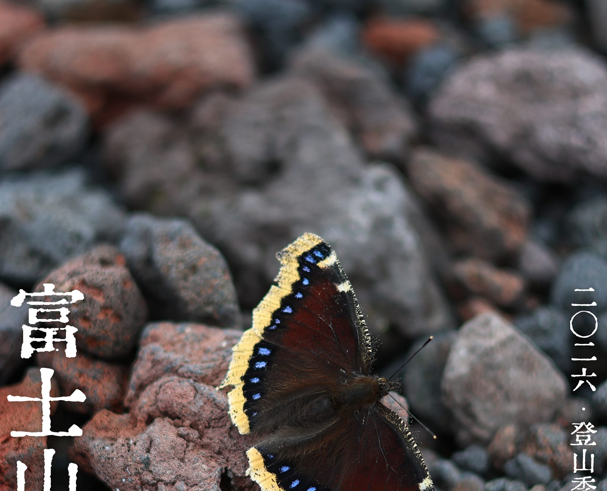

专业登山向导
全程中文 / 日文双语沟通，减少语言和现场判断带来的不确定。

极野一直在做的是：让户外不只是抵达一个地点，而是认真经历一段山行。我们会把节奏、讲解、体能准备和安全边界放在同一件事里。
人不是因为旅行改变，而是因为认真经历过一些事情才改变。登山，是其中一种。富士山不需要被神化，但必须被认真对待。
这不是“跟着走就好”的旅游团。我们希望你知道自己为什么在这里、脚下的山如何形成、天气为什么变化、队伍为什么需要节奏。
全程中文 / 日文双语沟通，减少语言和现场判断带来的不确定。
从成因、天气、植物、动物到人文，把“到此一游”变成真正走进富士山。
帮助第一次认真准备登山的朋友建立训练方向，而不是临出发才硬扛。
用稳定节奏降低过早耗尽体力和“冲顶失败”的概率。
提前讲清装备、队伍纪律、退出条件和现场应对，让快乐建立在认真之上。
2026 年 7 月 1 日至 9 月 10 日的富士山开放季内，小团制分批次出发。最终集合时间、山小屋位置、交通与温泉安排以正式出团通知为准。


我们欢迎第一次挑战富士山的朋友，但前提是你愿意为这件事认真准备。极野的户外体验，不追求“最轻松”，而追求更纯粹、更有生命力。
以下为页面阶段的服务结构说明。具体价格、团期、山小屋与交通安排，以正式报名信息和最终出团通知为准。
正式报名需要阅读并确认《富士山活动规则及同意书》。页面下方是摘要，法律效力以日文正式版本为准。
参加者需完成主办方指定的登山培训，并按当年官方规则完成富士山入山相关注册与时间表确认。
登山期间必须听从导游指示，不得擅自前行；若明显落后目标时间、脱离首队或出现高山病风险，导游可判定离团。
迟到、离团后协助、遗失物处理等情况可能产生额外费用；导游交通费、按小时支援费和邮寄费用依规则执行。
强烈建议购买旅行 / 登山保险。主办方和导游不能提供高山病药、感冒药等医药品。
如因天气或主办方原因取消活动，将按规则全额退款。取消请以邮件或信息等书面方式通知。
请在正式报名与付款前阅读。若页面摘要与正式文件不一致，以正式文件和最终出团说明为准。

富士山开放季内分批次出发。我们会控制人数，优先保证体验、节奏和安全边界，而不是把队伍做大。
在这里提交意向，或通过评论区 / 私信发送「富士山」。我们会根据你的日期、人数、经验与联系方式进行后续沟通。
提交意向不代表预约成功。完成付款并确认活动规则后，预约才正式成立。
如果你不确定是否适合参加，也可以在备注里写下体能、经验和顾虑。